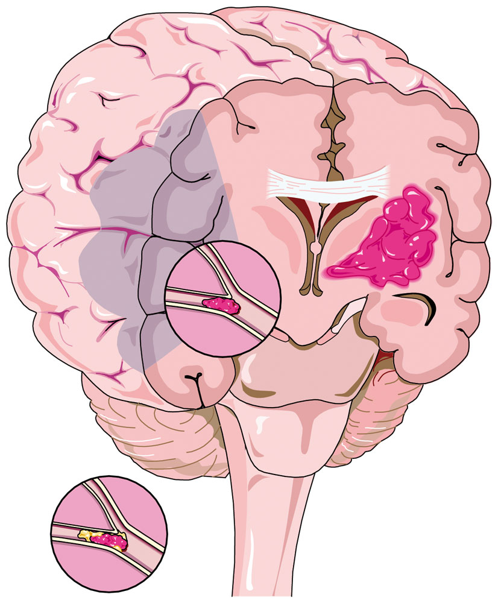
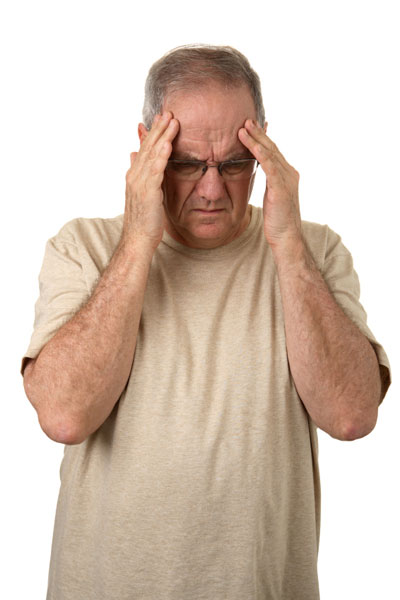

Stroke
Stroke
According to the National Stroke Foundation, stroke is the second most largest cause of death. In 2009, around 60,000 people will have a stroke in Australia.
A stroke is a brain attack and when a person suffers a stroke, essential supplies of blood and oxygen are cut off from the cells in the brain. These control everything we do such as speech, movement and breathing.

Treat stroke with the same degree of seriousness as a heart attack.
Two common causes prompt strokes:
 A blocked blood vessel to the brain (an occlusion),
A blocked blood vessel to the brain (an occlusion),
 A ruptured blood vessel causing bleeding into the brain (intracranial haemorrhage).
A ruptured blood vessel causing bleeding into the brain (intracranial haemorrhage).

Cross Section of the Brain showing a Clot and an Obstruction
When a stroke occurs, it kills brain cells in the immediate area because they are no longer receiving the oxygen and nutrients needed to function.
Brain cells usually die within an hour from the beginning of the stroke.
Stroke is most common in the elderly, but people of any age and any level of physical fitness can suffer the injury.
Strokes occur in two main forms:
Cerebral Vascular Accident (CVA) which causes permanent damage to the brain tissue through oxygen starvation (blocked vessel), or pressure (bleeding). There is permanent damage to the brain, resulting in physical and/or sensory impairment
Transient Ischaemic Attack (TIA) is when the signs of stroke are present but go away within 24 hours. The term TIA is used sometimes referred to as a 'mini stroke', which is a temporary condition usually caused by a minor blockage of the brain's blood vessels.
The blockage lasts long enough to temporarily show the signs and symptoms of a CVA. TIA's may last from several minutes to several hours.
TIA's should be regarded as a warning sign that the person is at risk of a stroke and should be investigated promptly.
 a TIA should never be ignored
a TIA should never be ignored

Signs and Symptoms
 FAST -Face Arm Speech Test
FAST -Face Arm Speech Test
 Facial weakness -can the person smile? Has their mouth or eye drooped?
Facial weakness -can the person smile? Has their mouth or eye drooped?
 Arm weakness -can the person raise both arms?
Arm weakness -can the person raise both arms?
 Speech problems - can the person speak clearly and understand what you say?
Speech problems - can the person speak clearly and understand what you say?
 Time to act - call Triple Zero (000)
Time to act - call Triple Zero (000)
 if the casualty fails any one of the FAST tests call Triple Zero (000)
if the casualty fails any one of the FAST tests call Triple Zero (000)
Other symptoms
 sudden severe headache
sudden severe headache
 sudden nausea and/or vomiting
sudden nausea and/or vomiting
 warm, flushed, clammy skin
warm, flushed, clammy skin
 slow, full pulse
slow, full pulse
 may have distended neck veins
may have distended neck veins
 lost or blurred vision in one or both eyes
lost or blurred vision in one or both eyes
 may have unequal pupils
may have unequal pupils
 paralysis, numbness, weakness or loss of coordination of limbs, usually on one side of the body
paralysis, numbness, weakness or loss of coordination of limbs, usually on one side of the body
 dizziness, loss of balance
dizziness, loss of balance
 difficulty swallowing or salivary drool
difficulty swallowing or salivary drool
 urinary incontinence
urinary incontinence
 brief loss of consciousness
brief loss of consciousness
 unconscious – 'snoring' respirations
unconscious – 'snoring' respirations
 may have seizures
may have seizures

Care and Treatment
 if the casualty fails any one of the FAST tests act FAST and call Triple Zero (000)
if the casualty fails any one of the FAST tests act FAST and call Triple Zero (000)
 adopt position of comfort, taking care that the airway does not become obstructed by drool or mucus
adopt position of comfort, taking care that the airway does not become obstructed by drool or mucus
 reassurance – talk to the casualty even if unconscious
reassurance – talk to the casualty even if unconscious
 recovery position if unconscious, constantly observe
recovery position if unconscious, constantly observe
 maintain body temperature
maintain body temperature
Prompt action can prevent further damage to the brain and help the casualty make a full recovery. Delays in obtaining treatment can result in death or major long-term disabilities.
Useful Resource
National Stroke Foundation
 1800 787 653
1800 787 653
www.strokefoundation.com.au